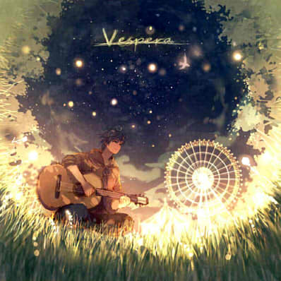

当我学习时 我听些什么
发表于2015.11.13 By Charlsey
Hi，欢迎来到我的静态博客。
学习编程有一段时间了，想试着做一些东西出来。当我看到静态博客时，我就想实现它了。现在我看着自己搭建的博客，好开心❤~一些歌不会干扰你的思绪，又能让你脑筋越动越快。
今天就来跟大家分享我在学习时听的歌（网易云音乐链接）：
当我读书时，我听些什么（http://music.163.com/#/playlist?id=2106183）

怎么样，是不是很好听？当然每个人审美都不同，如果有什么能让学习变得更有趣，那就再好不过了。
欢迎跟我一起来学习，感受学习的乐趣。